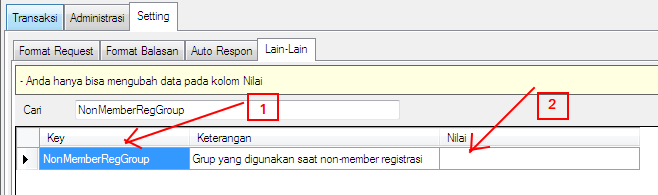
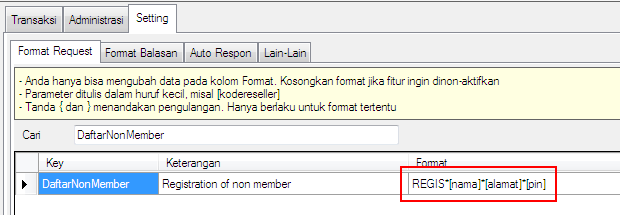
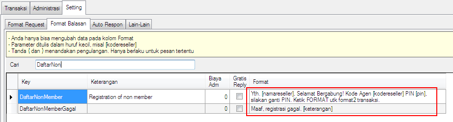

Format Daftar Non Member
Terkadang kita menginginkan calon Reseller dapat mendaftar sendiri dengan hanya mengirimkan SMS dengan format tertentu tanpa harus kita mendaftarkan secara manual. Nah, dengan fitur Format Daftar Non Member ini calon Reseller Anda dapat mendaftar secara mandiri di server pulsa OtomaX Anda. Perlu diketahui fitur hanya tersedia di versi 3.6.7 atau lebih tinggi.
Agar fitur ini bekerja diperlukan setting berikut ini:
- Masuk menu Administrasi -> Grup Reseller, pilih dan tentukan Grup Reseller yang akan dijadikan Grup bagi calon Reseller ketika mendaftar mandiri. Misalnya: Anda ingin memasukkannya ke Grup dengan kode RM, catat Kode Grup tersebut.
-
Pindah ke menu Setting -> Lain-lain cari key: NonMemberRegGrup. Kemudian pada kolom Nilai masukkan Kode Grup yang telah dipilih tadi, pada contoh ini ialah RM dan klik tombol Simpan.

- Agar setting baru Anda tersimpan sempurna, tutup OtomaX Anda dan jalankan kembali.
-
Untuk mengetahui Format Daftar Non Member masuk menu Setting -> Format Request cari key: DaftarNonMember.

-
Adapun untuk format balasannya di Setting -> Format Balasan cari key: DaftarNonMember.

- Selesai.
Kemudian, jika Anda mempunyai pertanyaan tentang fitur Daftar Non Member atau mengalami gendala, kirimkan melalui email ke alamat support@otomax-software.com atau klik disini.